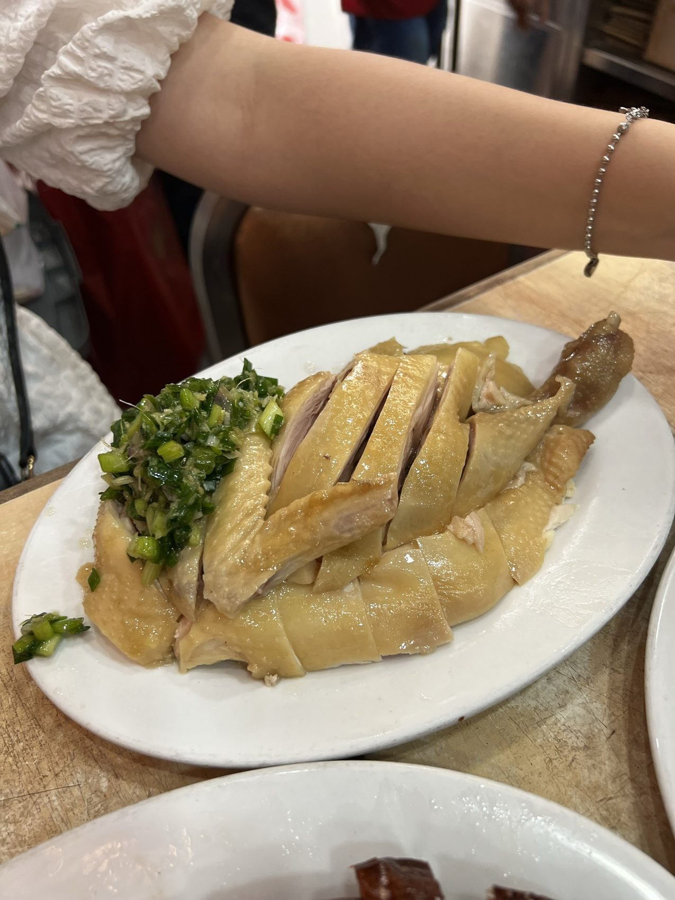

A short family Hong Kong escape built around Causeway Bay wandering, excellent food stops, harbor and city texture, and Disneyland happiness.
Hong Kong
14-16 July 2023
Family trip
Causeway Bay + Disneyland
Food-led city wandering
This was not the kind of trip that needed a packed checklist. It worked because the days stayed compact: good food, easy city movement, and one happy Disneyland chapter that made the short stay feel complete.
Hong Kong works well as a short city break when the plan stays simple: eat well, walk a little, and let the city views do part of the work.
The main lesson from this Hong Kong trip is simple: two nights can be fun, but they are not enough when the food is this good.
The trip was short and family-led, with Causeway Bay as the city base and Disneyland as the emotional anchor. Instead of trying to cover too much, the best parts were the obvious ones: a proper egg tart, a crowded roast goose stop, and the familiar happiness of Disney.
If I were using this as a reference, I would treat it as a compact Hong Kong starter plan: keep the route light, save appetite for the food stops, and add more nights if the goal is to enjoy the city without rushing.
Hong Kong, in moments
Choose the chapter by appetite first.
The city story is compact here, so the grid works like a quick moodboard: skyline, streets, food, then the short-trip lesson.
Hong Kong was a family trip, not a solo research mission and not an overplanned city guide. The rhythm was relaxed: stay around the city, eat well, keep Disneyland on the plan, and let the rest stay flexible.
That makes this page more useful as a mini reference than a complete itinerary. If you only have a short window, it shows what felt worth protecting: one proper roast goose meal, one egg tart stop, and enough city time to enjoy the atmosphere without pretending two nights can cover everything.
Harbor + city
Hong Kong is strongest when you leave room for the view
The skyline and harbor views were part of the meal memory here. Even when the plan was food-led, the city kept showing up in the background: buildings, water, signs, and that dense vertical feeling Hong Kong does so well.
A skyline moment that made the short trip feel more complete.City texture between meals, and the main reason the next Hong Kong visit should be slower.
Causeway Bay
City wandering between meals
Causeway Bay worked as the kind of Hong Kong base where the city never feels too quiet. It gave the trip easy walking texture between food stops: signs, lights, shops, and the constant sense that another snack or meal could appear nearby.
Causeway Bay was less about one specific attraction and more about the useful city texture around the food stops.
Food notes
The food did most of the convincing
If there is one reason this trip deserves a NutNibbles page, it is the food. The memories are not complicated, but they are clear: Bakehouse for the egg tart, Yat Lok for roast goose, and the feeling that Hong Kong should be given more than a short weekend if eating is the priority.
Bakehouse
Egg tart worth planning around
The Bakehouse egg tart was the easy win: simple, focused, and the kind of thing I would put on a first-timer Hong Kong food list without overthinking it.
Yat Lok
Roast goose, crowd, and still worth it
Yat Lok was crowded, Michelin-starred, and not the warmest service experience. Still, the roast goose was the kind of dish that made the stop worth repeating. The chicken dish was part of the same meal and stayed in the same solid comfort-food lane.
Bakehouse egg tart: the sweet stop I would keep in the plan.Yat Lok roast goose: crowded, direct, and worth it.

The chicken dish from the same Yat Lok meal.
Disneyland
A happy place still does its job
Disneyland was one of the best memories of the trip. There is no need to make that sound more complicated than it was: it was a family trip, Disneyland was a happy place, and that alone made the short Hong Kong escape feel more memorable.
Food made the trip worth remembering; Disneyland made it feel happy.
Next time
The only thing I would change: stay longer
Two nights made the trip easy to fit in, but it also made the city feel slightly unfinished. If I were planning this again, I would add more time and keep the same food-led approach: one or two anchor meals, one bakery stop, Disneyland if it fits the group, and less pressure to keep moving.
Best use of this page
Use it as a compact Hong Kong starter note: Bakehouse, Yat Lok, Causeway Bay wandering, Disneyland, and one extra night if you can make the schedule work.
Final takeaway
Short, food-led, and worth repeating
Hong Kong 2023 was not a complete city guide, but it was a good reminder of what NutNibbles is for: small real notes that help future trips feel easier to shape. The best version of this route is simple: arrive hungry, keep the city plan loose, and stay longer than two nights if the food is the main reason you are going.